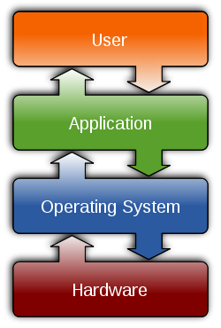
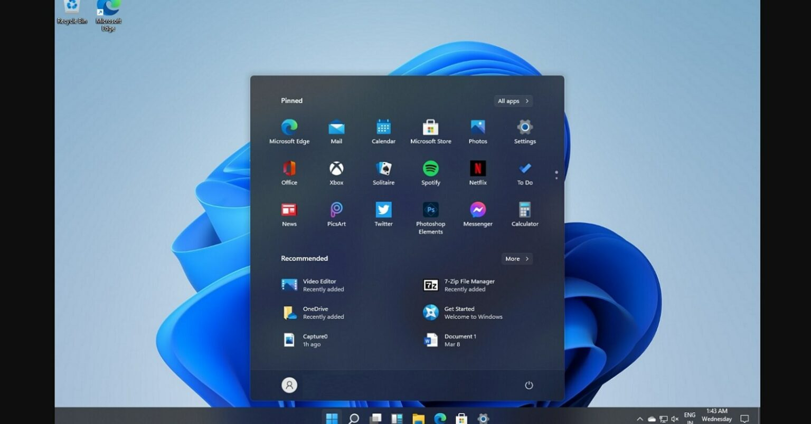

Wprowadzenie do systemu GNU/Linux
Marcin Fabrykowski
Prezentacja dostępna pod adresem:
http://www.warsztaty.linux.org.pl
Czym jest system operacyjny???
To program, który zarządza zasobami komputera.
Zapewnia warstwę abstrakcji pomiędzy sprzętem a programami użytkownika.
Koordynuje współdzielenie zasobów sprzętowych.
Pozwala na uruchamianie innych programów.
Architektura

Jak wygląda OS?
Windows

Jak wygląda OS?
Linux

Po co mi Linux?
- Po prostu desktop
- Administracja serwerami
- Programowanie (kontenery)
- Raspberry Pi
Gdzie działa Linux?
- smartwatche
- raspberry pi
- telefony
- telewizory
- komputery/laptopy
- serwery
- superkomputery
Dlaczego Linux?
Otwartość kodu źródłowego
Darmowość
Bezpieczeństwo
Stabilność
Konfigurowalność
Zasobożerność (a raczej jej brak)
Plan warsztatów
- łączenie się z serwerem
- poruszanie się po systemie
- uruchomienie prostej aplikacji
- operacje na plikach i katalogach
- instalacja oprogramowania
- obsługa edytora vim
- konfiguracja strony WWW
- podstawy wyrażeń regularnych
- konfiguracja bloga opartego o Wordpress
Konwencje w prezentacji
polecenie- polecenie, które należy wpisać w terminalu<nazwa>- zmienna, którą należy zastąpić odpowiednią wartością (bez znaków<i>)cd <userX>oznaczacd user40(dlauser40)
łączenie się z serwerem
- kliknij menu start
- uruchom PowerShell
- wpisz:
ssh user@ssh.warsztaty.linux.org.pl -p 82<XX>- Wpisz hasło:
passwd13(hasło nie będzie wyświetlane) - Już :)
Prompt
user3@warsztaty:~$user3- nazwa użytkownika@- atwarsztaty- nazwa hosta~- bieżący katalog$- zwykły użytkownik#- administrator
Składnia poleceń
polecenie␣[opcje]␣[argumenty]ls -l /etc
Zadanie 0 - pierwsze uruchomienie programu
Pierwszym zadaniem będzie uruchomienie programu
cmatrix.
aby uruchomić program, wpisz jego nazwę i naciśnij
Entercmatrixaby zakończyć program, naciśnij
CTRL+c
Zadanie 0 - przekazywanie parametrów
parametry mogą być bez wartości, np.
-rcmatrix -rparametry mogą mieć wartość, np.
-C redcmatrix -C redparametry można łączyć
cmatrix -C blue -u 4 -s
Struktura systemu plików
/
├── run
│ ├── agetty.reload
│ ├── apache2
│ │ └── apache2.pid
│ ├── console-setup
│ │ └── boot_completed
├── etc
│ ├── aliases
│ ├── alternatives
│ │ └── aclocal -> /usr/bin/aclocal-1.16- system plików jest drzewem
/- katalog główny- wszystkie katalogi są podkatalogami katalogu
/
Struktura systemu plików
Przykładowe ścieżki do plików i katalogów
# katalogi
/etc/
/home/
/home/user1/
# pliki
/etc/passwd
/var/www/html/user1/strona/index.html
/home/user1/strona/index.html
/home/user1/strona/assets/images/show-event-02.jpgPoruszanie się po systemie
pwd- wyświetla ścieżkę do bieżącego kataloguls- wyświetla zawartość katalogucd <katalog>- zmienia bieżący katalogmkdir- tworzy katalogrmdir- usuwa katalog
najważniejsze katalogi
/- katalog główny/etc- konfiguracja systemu/bin,/sbin- programy systemowe/usr- programy użytkowe/home- katalogi użytkowników/tmp- dane tymczasowe.- bieżący katalog..- katalog nadrzędny
Zadanie 1 - uruchomienie aplikacji
Drugą aplikacją, którą uruchomimy, będzie aplikacja webowa. Aplikacja
znajduje się w katalogu /opt/flask-app.
Jest to aplikacja webowa, więc będziemy mogli ją zobaczyć w przeglądarce.
Dostępna będzie pod adresem:
https://user
Zadanie 1 - uruchomienie aplikacji
przejdź do katalogu z aplikacją
cd /opt/flask-appwyświetl zawartość katalogu
lsuruchom aplikację
./app.py
Zadanie 1 - uruchomienie aplikacji
przejdź do przeglądarki i otwórz stronę:
https://user<X>.warsztaty.linux.org.pl/flaskzatrzymaj aplikację w terminalu
CTRL+czobaczmy, co znajduje się w katalogu aplikacji
ls
Ścieżki do plików i katalogów
- ścieżki mogą być względne i bezwzględne
- ścieżka względna wskazuje na plik lub katalog względem bieżącego katalogu
- ścieżka bezwzględna wskazuje na plik lub katalog względem katalogu głównego
Ścieżki do plików i katalogów
Będąc w katalogu
/home/user1/
ścieżka do pliku index.html to:
ścieżka względna:
index.htmlścieżka bezwzględna:
/home/user1/index.html
home/
├── user1 <==
│ └── index.html
└── user2
└── notatki.txtŚcieżki do plików i katalogów
Natomiast będąc w katalogu
/home/user2/
ścieżka do tego samego pliku index.html to:
ścieżka względna:
../user1/index.htmlścieżka bezwzględna:
/home/user1/index.html
home/
├── user1{.bash}
│ └── index.html
└── user2 <==
└── notatki.txtOperacje na plikach i katalogach
cat- wyświetla zawartość plikuless- wyświetla zawartość pliku (po stronach)head- wyświetla początkowe linie plikutail- wyświetla końcowe linie plikucp- kopiowanie plikówmv- przenoszenie i zmiana nazwy plikówrm- usuwanie plików
Operacje na plikach i katalogach
cat <plik>- wyświetla zawartość plikutail <plik>- wyświetla końcowe linie plikutail -n <liczba> <plik>- wyświetla ostatnie<liczba>linii plikutail -F <plik>- wyświetla końcowe linie pliku i śledzi zmiany (ctrl+c aby zakończyć)
Operacje na plikach i katalogach
cp <plik1> <plik2>- kopiuje plik1 do pliku2cp <plik1> <katalog>- kopiuje plik1 do katalogumv <plik1> <plik2>- zmienia nazwę pliku1 na plik2mv <plik1> <katalog>- przenosi plik1 do katalogu
Zadanie 2a - wyświetlenie zawartości pliku
Nasza aplikacja stworzyła plik z bazą danych. Aby go wyświetlić,
użyjemy polecenia cat.
przejdź do katalogu z aplikacją
cd /opt/flask-appwyświetl zawartość pliku
data.dbcat data.db
Zadanie 2b - kopiowanie pliku
Zrób kopię naszej bazy danych znajdującej się w pliku
data.db.
Zadanie 2b - kopiowanie pliku
skopiuj plik
data.dbdo plikudata.db.bakcp data.db data.db.bakwyświetl zawartość katalogu, aby sprawdzić, czy plik został skopiowany
lswyświetl zawartość pliku
data.db.bakcat data.db.bak
Zadanie 2b - kopiowanie pliku
Dokonaj zmian w aplikacji,
a następnie przywróć bazę danych z kopii.
Zadanie 2b - kopiowanie pliku
dodaj nowe dane do aplikacji
wyświetl zawartość pliku
data.dbcat data.dbprzywróć bazę danych z kopii
cp data.db.bak data.dbwyświetl zawartość pliku
data.dbcat data.dbodśwież stronę aplikacji
Zadanie 2c - zmiana nazwy pliku
Nazwij plik backupu tak, aby zawierał datę utworzenia.
Pomoże to w przyszłości, gdy będziemy mieli wiele kopii pliku.
Zadanie 2c - zmiana nazwy pliku
wyświetl zawartość katalogu, aby sprawdzić, czy plik istnieje
lszmień nazwę pliku
data.db.baknadata.db.<data>mv data.db.bak data.db.20241010wyświetl zawartość katalogu, aby sprawdzić, czy plik został zmieniony
ls
Zadanie 2d - usuwanie pliku
Usuń plik ze starszą kopią bazy danych.
Zadanie 2d - usuwanie pliku
wyświetl zawartość katalogu, aby sprawdzić, czy plik istnieje
lsusuń plik
data.db.20241010rm data.db.20241010wyświetl zawartość katalogu, aby sprawdzić, czy plik został usunięty
ls
Instalacja oprogramowania
Do instalacji oprogramowania w systemie Linux służy (przeważnie) menadżer pakietów.
W zależności od dystrybucji, mogą to być np.:
apt- Debian, Ubuntudnf- Fedora
Tylko administrator systemu może instalować oprogramowanie.
Wykonywanie poleceń jako administrator
- Aby wykonać polecenie jako administrator, należy
dodać przed nim
sudo. - składnia:
sudo <polecenie>
Zadanie 3a - wykonywanie poleceń jako administrator
sprawdzmy nazwę użytkownika
whoamiwykonajmy polecenie
sudo whoamisudo whoamiczęsto spotykane jest przejście do trybu administratora
sudo su -wyjdźmy z trybu administratora
exit
Zadanie 3b - instalacja programu
Zainstalujemy program vim, który jest edytorem
tekstu.
Zadanie 3b - instalacja programu
sprawdź czy program
vimjest zainstalowanyvimspróbuj zainstalować program
vimjako użytkownikdnf install vimzainstaluj program
vimjako administratorsudo dnf install vimsprawdź czy program
vimjest zainstalowanyvim
Obsługa edytora vim
- vim jest edytorem modalnym, czyli ma kilka trybów
pracy, m.in.:
- tryb normalny
- tryb wstawiania
- tryb wizualny
Obsługa edytora vim
- tryb normalny - służy do nawigacji po pliku i wykonywania poleceń
- nawigować można za pomocą klawiszy
h,j,k,llub strzałek - przejście do trybu wstawiania:
i… - …jak również na kilkanaście innych sposobów
- wyjście z trybu wstawiania:
ESC
Obsługa edytora vim
- szukanie tekstu:
/tekst - zapisanie pliku:
:w - wyjście z vim-a:
:q - zapisanie i wyjście z vim-a:
:wq
Obsługa edytora vim
- kopiowanie i wklejanie tekstu:
yy- kopiowanie liniip- wklejanie
- usuwanie tekstu:
dd- usuwanie liniix- usuwanie znaku
- cofanie i ponawianie zmian:
u- cofanieCTRL+r- ponawianie
Obsługa edytora vim (extra)
- wejście do trybu wstawiania:
- przed kursorem:
i - za kursorem:
a - na początku linii:
I - na końcu linii:
A - linijka poniżej:
o - linijka powyżej:
O
- przed kursorem:
Zadanie 3c - instalacja programu
Zainstaluj program nano.
Zadanie 3c - instalacja programu
sprawdź czy program
nanojest zainstalowanynanospróbuj zainstalować program
nanojako użytkownikdnf install nanozainstaluj program
nanojako administratorsudo dnf install nano
Zadanie 4 - edycja pliku
Naszym zadaniem będzie zmiana nagłówka w naszej aplikacji
Kod html strony znajduje się w pliku
templates/index.html względem katalogu aplikacji.
Należy zmienić nagłówek h1 z Flask HTMX Demo na dowlną
inną wartość.
Zadanie 4 - edycja pliku (vim)
przejdź do katalogu z aplikacją
cd /opt/flask-appuruchom edytor
vimi otwórz pliktemplates/index.htmlvim templates/index.htmlznajdź nagłówek h1 i zmień jego wartość
zapisz plik i wyjdź z edytora
Zadanie 4 - edycja pliku (vim)
w edytorze vim:
znajdź nagłówek h1
/<h1>użyj
iaby przejść do trybu wstawianiazmień wartość nagłówka
użyj
ESCaby wyjść z trybu wstawianiazapisz plik
:wq
Zadanie 4 - edycja pliku (nano)
uruchom edytor
nanoi otwórz pliktemplates/index.htmlnano templates/index.htmlznajdź nagłówek h1 i zmień jego wartość
zapisz plik poprzez
CTRL+owyjdź z edytora poprzez
CTRL+x
Zadanie 4 - edycja pliku
uruchom aplikację
./app.pyodśwież stronę w przeglądarce
zobacz zmiany w przeglądarce
System wieloużytkownikowy
- Linux jest systemem wieloużytkownikowym
- każdy użytkownik ma swoje katalogi domowe, uprawnienia i ustawienia
- każdy użytkownik może być zalogowany na kilku terminalach jednocześnie
Zadanie 5 - praca na wielu terminalach
Naszym zadaniem będzie równoległe edytowanie pliku index.html or uruchomienie aplikacji.
Wykorzystamy do tego dwa terminale.
Zadanie 5 - praca na wielu terminalach
otwórz drugi terminal
zaloguj się jako ten sam użytkownik
ssh user@ssh.warsztaty.linux.org.pl -p 82<XX>``przejdź do katalogu z aplikacją
cd /opt/flask-app
Zadanie 5 - praca na wielu terminalach
- w pierwszym terminalu uruchom aplikację
- w drugim terminalu otwórz plik
index.htmli dokonuj zmian - zapisz plik bez wychodzenia z edytora
- sprawdź zmiany w przeglądarce
Grep i wyrażenia regularne
- grep - pozwala wyszukiwać wzorce w tekście
- wykorzystywane jest to np:
- do przeglądania logów
- do przeszukiwania plików
- do filtrowania wyników innych poleceń
Grep i wyrażenia regularne
grep <wzorzec>- wyszukuje wzorzec w wejściu standardowymgrep <wzorzec> <plik>- wyszukuje wzorzec w pliku
(bardzo) podstawowe wyrażenia regularne
.- dowolny znak*- dowolna liczba poprzedzającego znaku.*- dowolna liczba dowolnych znaków^- początek linii$- koniec linii[a-z],[abc],[0-9]- dowolny znak z podanego zakresu
Zadanie 5a - “grepowanie” plików
wyświetl wszystkie linie z logu aplikacji
cat access.logwyświetl wszystkie linie z logu aplikacji zawierające słowo
POSTgrep POST access.logwyświetl wszystkie linie z logu z konkretego zakresu minut
grep '12:3[0-5]:' access.logwyświetl nagłówek h1 z pliku
index.htmlgrep '<h1>' templates/index.html
Standardowe wejście i wyjście
- standardowe wejście - ujednolicone źródło danych dla programów
- standardowe wyjście - ujednolicone miejsce, gdzie programy wypisują dane
- domyślnie jest to klawiatura i ekran
Standardowe wejście i wyjście - przekierowania
- można przekierować standardowe wyjście na plik
- można przekierować standardowe wyjście z jednego programu na standardowe wejście innego programu
- przekierowanie między programami nazywa się potokiem
- tworzy się go za pomocą znaku
|
Zadanie 5b - potoki
śledź zmiany w logu aplikacji
tail -F access.logprzekieruj wyjście z
tailnagreptail -F access.log | grep POST
Uprawnienia do plików i katalogów
- każdy plik i katalog ma właściciela i grupę
- każdy plik i katalog ma zestaw uprawnień, które dzieją się na 3 grupy
- uprawnienia można zmieniać za pomocą polecenia
chmod - uprawnienia można sprawdzać np za pomocą polecenia
ls -l
Uprawnienia do plików i katalogów
- uprawnienia dzielą się na:
- uprawnienia właściciela (u)
- uprawnienia grupy (g)
- uprawnienia innych (o)
- typy uprawnień:
- odczyt (read)
- zapis (write)
- wykonanie (execute)
Uprawnienia do plików i katalogów
- przykład:
-rw-r--r-- index.html - zmiana uprawnień:
chmod u+x index.html -rwxr--r-- index.htmlchmod u+r <plik>
chmod g+r <plik>
chmod o+r <plik>
chmod +r <plik>
Uprawnienia do plików i katalogów
- przykład:
-rw-r--r-- index.html - zmiana uprawnień:
chmod 640 index.html -rw-r----- index.html- 640 jest w systemie ósemkowym
- 640 = 110 100 000 =
rw- r-- ---
Zadanie 6a - zmiana uprawnień do pliku
sprawdź uprawnienia do pliku
data.dbls -l data.dbusuń uprawnienie do zapisu dla pliku data.db
chmod -w data.dbsprawdź uprawnienia do pliku
data.dbls -l data.dbspróbuj dodać nowe dane do aplikacji
Zadanie 6b - zmiana uprawnień do pliku
zabierz uprawnienia do odcztu dla pliku
data.dbchmod -r data.dbsprawdź uprawnienia do pliku
data.dbls -l data.dbodśwież stronę aplikacji
przywróć uprawnienia do pliku
data.dbchmod 640 data.db
Przydatne polecenia przy instalacji aplikacji
wget <url>- program do pobierania plików z internetutar- program do archiwizacji plikówtar -xzf <archiwum>- rozpakowuje archiwum tar.gz
Zadanie 7 (finał) - instalacja bloga Wordpress
- ostatnim zadaniem będzie instalacja bloga Wordpress
- będzie to okazja do wykorzystania wszystkich poznanych wcześniej komend (i trochę więcej)
- to zadanie jest bardzo zbliżone do prawdziwych zadań, które wykonuje administrator systemu
Zadanie 7 - instalacja Wordpress
Co należy zrobić:
- musimy zainstalować serwer WWW wraz z obsługą PHP i bazy danych
- musimy zainstalować i skonfigurować bazę danych
- musimy pobrać i rozpakować bloga Wordpress
Zadanie 7 - instalacja Wordpress
Instalacja serwera WWW:
zainstaluj serwer WWW Apache
sudo dnf install httpdzainstaluj PHP
sudo dnf install phpuruchom serwer WWW
sudo systemctl start httpd
Zadanie 7 - instalacja Wordpress
Instalacja bazy danych:
zainstaluj bazę danych MariaDB
sudo dnf install mariadb-serveruruchom bazę danych
sudo systemctl start mariadb
Zadanie 7 - instalacja Wordpress
Konfiguracja bazy danych:
utwórz bazę danych i użytkownika
sudo mysql -u root -ppodajemy puste hasło
stwórz bazę danych oraz użytkownika
CREATE DATABASE wordpress; CREATE USER 'wordpress'@'localhost' IDENTIFIED BY 'wordpress'; GRANT ALL PRIVILEGES ON wordpress.* TO 'wordpress'@'localhost'; FLUSH PRIVILEGES; quit
Zadanie 7 - instalacja Wordpress
przełącz się na konto administratora
sudo su -przejdź do katalogu ze stroną WWW:
cd /var/www/html/pobierz bloga Wordpress:
wget https://wordpress.org/latest.tar.gzzainstaluj program wget
dnf install wget
Zadanie 7 - instalacja Wordpress
rozpakuj archiwum:
tar -xzf latest.tar.gzwyświetl zawartość katalogu
lsprzejdź do strony z Wordpress
http://warsztaty.linux.org.pl:20080/worpress
Zadananie 7 - instalacja Wordpress
Napotykamy pierwszy problem - brak obsługi mysql w PHP.
znajdź pakiet, który zawiera brakujące rozszerzenie
dnf search php-mysql # lub używając poleceń grep dnf search mysql | grep phpzainstaluj brakujące rozszerzenie
dnf install php-mysqlndzrestartuj serwer WWW or PHP
systemctl restart httpd systemctl restart php-fpm
Zadanie 7 - instalacja Wordpress
odśwież stronę z Wordpress
uzupełnij dane do bazy danych
database: wordpress user: wordpress password: wordpress host: localhostzatwierdź
ups
Zadanie 7 - instalacja Wordpress
Widzimy błąd, że plik
wp-config.phpnie mógł zostać utworzony.Wynika to z faktu, że serwer WWW nie ma uprawnień do zapisu w katalogu Wordpress.
Musimy zmienić uprawnienia katalogu
/var/www/html/wordpress.chown -R apache:apache /var/www/html/wordpresscofnij się do strony z Wordpress i spróbuj ponownie
Co dalej?
podręcznik manuala:
man <polecenie>np:
man lsspołeczności:
Polska Grupa Użytkowników Linuksa
https://discord.linux.org.plpraktyka, praktyka, praktyka (maszyna wirtualna, vps, Raspberry Pi)
Pytania?
https://discord.linux.org.pl